Simulation-不兼容网格
本章讨论了兼容和不兼容网格划分方法在实体单元网格中的区别。兼容网格相邻零件或实体的网格波节是合并在一起的，以保证接合。如果不满足这个条件则会得到不兼容网格。
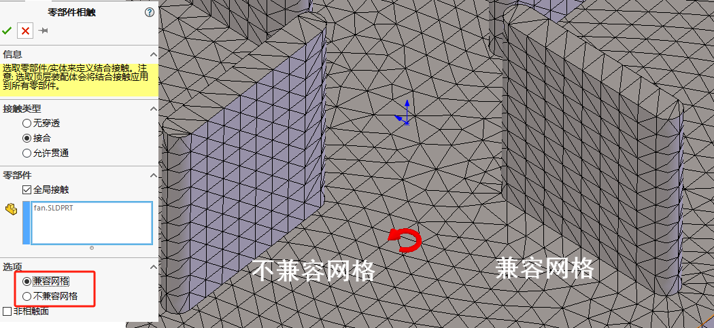兼容对比说明
兼容网格
在兼容网格中，接触实体被网格化，以便在每个实体的网格之间存在节点到节点的对应。
对应的节点可以合并(对于接合相触面)或叠加。对于无穿透接触面，会在源面和目标面上的重合节点之间创建节点到节点接触单元。基于兼容网格的结果比基于不兼容网格的结果更加准确。但是这样额外地添加约束使得网格划分器在执行网格划分时占用更多的时间。
非兼容网格
而在非兼容网格中，在每个接触实体的网格之间不存在节点到节点的对应，每个实体单独进行网格化。因此减少了完成网格划分需要的时间。
在【算例属性-选项-不兼容接合选项】的约束方程式(接合的接触)来确保接触面网格的接合。
兼容网格
新建算例
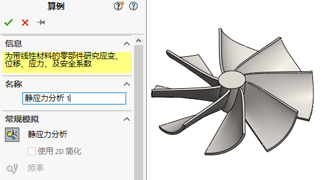材料
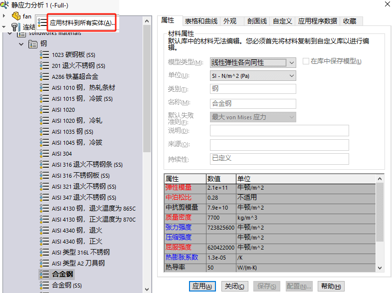连结
右键【连结-全局接触】编辑定义。
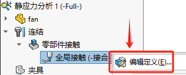 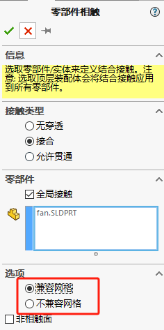夹具
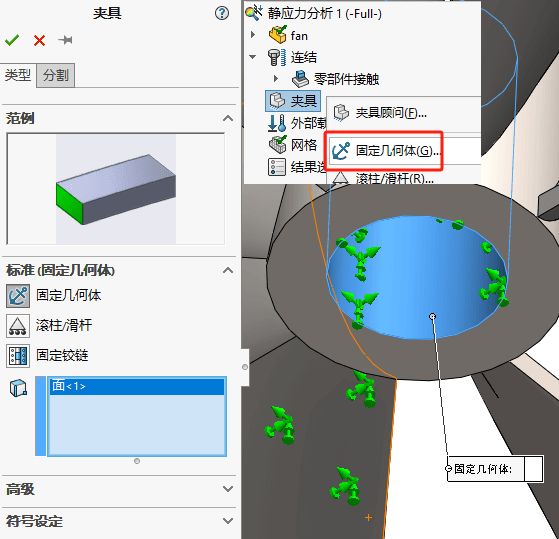载荷
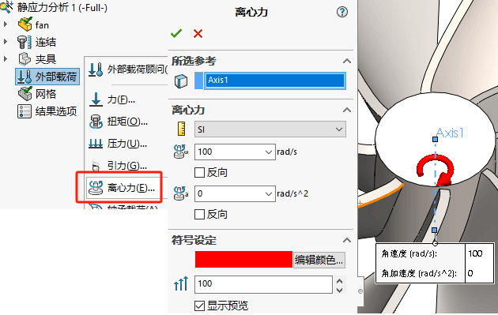网格
使用默认设置生成网格
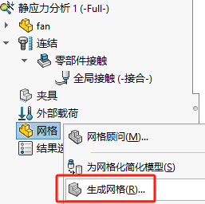运行
可以观察到零件的变形是对称分布的，最大位移量为0.08mm
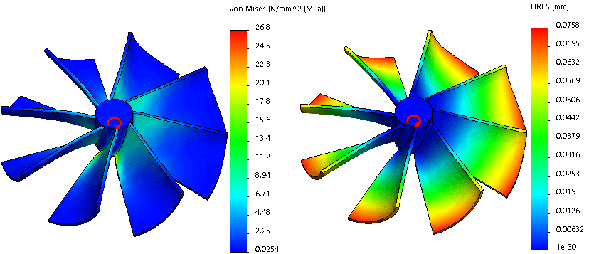不兼容网格
复制算例
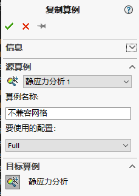连结
右键【连结-全局接触】编辑定义。
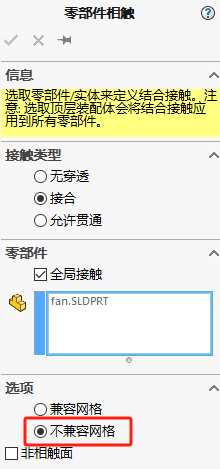修改兼容网格后，原本已有的网格划分会失效，软件会提示你“重新划分网格”。
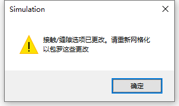网格
那默认设置生成网格即可，生成的网格在实体间的接触面上就不兼容（网格不相接）
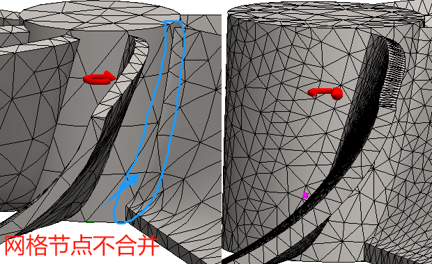不兼容接合选项
在【算例属性-选项-不兼容接合选项】，可以选择不兼容网格的接合计算方式，该方式是对此类不兼容（不相接）网格的处理方法。
- 自动：(默认)根据模型及求解时长自动选择接合类型。
- 简化：采用传统接合算法
- 更精准：
运行
不兼容结果
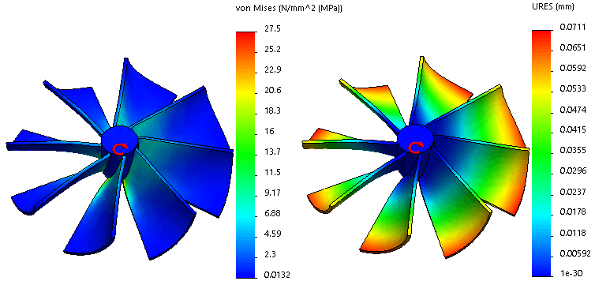兼容结果